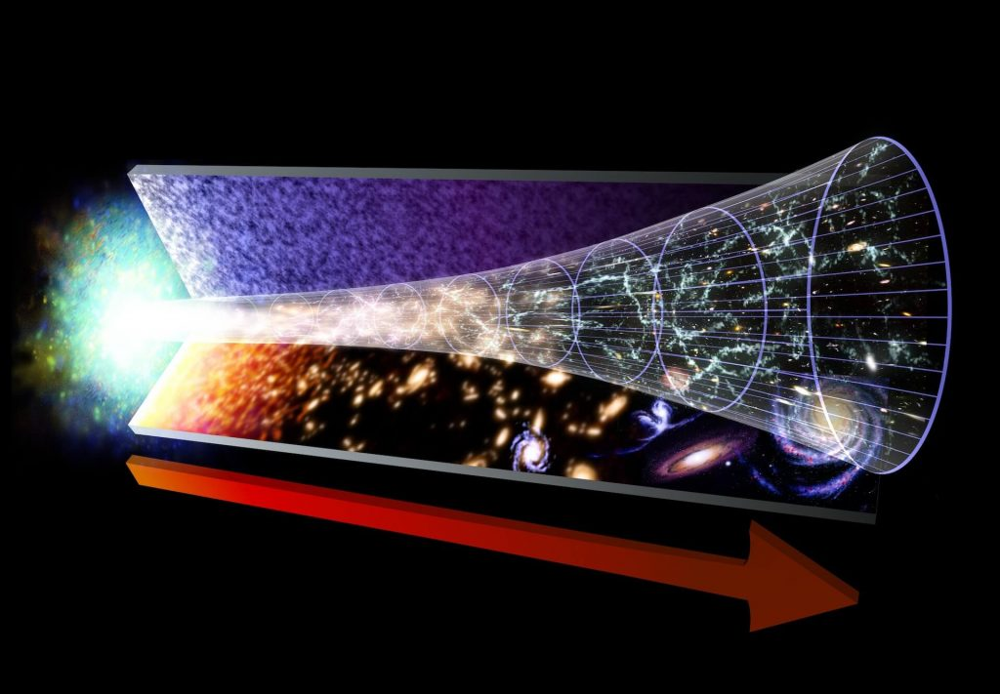
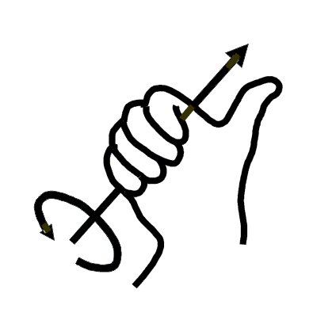

ဒီ အချိန် ပြောင်းပြန် သွားနေတဲ့ စကြာဝဠာကို “ဆန့်ကျင်ဖက် စကြာဝဠာ (anti-universe)” လို့ အမည် ပေးထားပါတယ်။
ဒီ ဆန့်ကျင်ဖက် စကြာဝဠာ ဟာ Big Bang ခေါ် မဟာပေါက်ကွဲ မှုကြီး ဖြစ်စဉ်မှာ ကျွန်တော်တို့ နေထိုင်တဲ့ စကြာဝဠာ နဲ့အတူတကွ မွေးဖွားလာ ခဲ့တယ်လို့ ဆိုပါတယ်။ ဒါပေမယ့် ဒီ စကြာဝဠာမှာ အချိန်ဟာ ကျွန်တော်တို့နဲ့ ဆန့်ကျင်ဖက်ကို ပြေးလွှား ခရီးသွား နေပါတယ်။
ဒီ သီအိုရီ ရဲ့ အခြေခံ ကတော့ စကြာဝဠာ ကနဦး Big Bang ပြီးစ ကာလမှာ ရှိတဲ့ မွေးကင်းစ စကြာဝဠာ လေးဟာ အရွယ်အစား အားဖြင့်လဲသေးငယ် သလို အလွန်ပူပြင်းပြီး အလွန်လဲ သိပ်သည်းတယ် ဆိုတဲ့ အချက်ကို အခြေခံ ထားတာ ဖြစ်ပါတယ်။

(Symmetric ဖြစ်တယ် ဆိုတာက စာရွက် တစ်ရွက်ကို ခေါက်လိုက်သလို ဘယ်ခြမ်းနဲ့ ညာခြမ်း ထပ်တူ ထပ်မျှ တစ်ထပ်ထဲ ကျနေတာကို ဆိုလိုတာ ဖြစ်ပါတယ်။)
အကယ်လို့ ဒီ သီအိုရီ သာ မှန်ကန် ခဲ့မယ် ဆိုရင် dark matter ခေါ် အမှောင်ဒြပ် ဆိုတာ ထူးဆန်းတဲ့ အရာတခု မဟုတ်တော့ ပါဘူး။
ဘာ့ကြောင့်ဆို အခုထက်ထိ ရူပဗေဒ ပညာရှင်တွေ အကြားမှာ ပဟေဠိ တစ်ခု ဖြစ်နေသေးတဲ့ နျူထရီနို (Neutrino) ခေါ်တဲ့ အမှုန် တစ်မျိုးဟာ ဒီလို ခေါက်ချိုးညီ စကြာဝဠာ မျိုးမှာပဲ ကြာရှည် တည်တန့်နိုင်မှာ မို့ ဖြစ်ပါတယ်။
ဒီ သီအိုရီ က ဒီနေရာတင် အဆုံး မသတ်သွား သေးပါဘူး။ ဒီ သီအိုရီ အရ big bang ဖြစ်ပြီးစ အစောပိုင်း ကာလမှာ ဖြစ်ပေါ်တဲ့ အာကာသ ဟင်းလင်းပြင် အလွန်လျင်မြန်စွာ ပြန့်ကားတဲ့ inflation ကာလလဲ လိုအပ်တော့မှာ မဟုတ်ပါဘူး။
ဆက်စပ်ဆောင်းပါး – Big Bang မတိုင်မီက ဘာဖြစ်ခဲ့ သလဲ
ဒီ inflation ကာလဟာ big bang ကနေ အခု မြင်ရတဲ့ စကြာဝဠာ အနေအထား အကျယ်အဝန်း ရောက်ဖို့ အချိန် မလုံလောက် မှုကြောင့် နက္ခတ် ပညာရှင် တွေက big bang သီအိုရီ ထဲမှာ ထည့်သွင်း ထားတဲ့ ကာလတိုလေး ဖြစ်ပါတယ်။ ဒီ ပြန့်ကားတဲ့ ကာလတိုလေး မရှိခဲ့ရင် စကြာဝဠာဟာ အခု အရွယ် ဖြစ်လာမှာ မဟုတ်လို့ပါ။
ဒါပေမယ့် တကယ်တော့ ဒီ inflation ဖြစ်စဉ် တကယ် ရှိ မရှိ ဆိုတာကို ဘယ်သူမှ သေခြာ မပြောနိုင် သလို ဒီ inflation ဘယ်လို ဖြစ်လာ ခဲ့သလဲ ဆိုတာကိုလဲ ဘယ်သူမှ အဖြေ မပေးနိုင် ကြပါဘူး။
ဒါပေမယ့် အခု ခေါက်ချိုးညီ စကြာဝဠာ အယူအဆ အရဆို ဒီ inflation ကာလ လိုအပ်တော့မှာ မဟုတ်ပါဘူး။ ဒီ သီအိုရီ အရဆို အာကာသ ဟင်းလင်းပြင်ဟာ ပုံမှန် နှုန်းနဲ့ အခု လက်ရှိ အနေအထား ရောက်အောင် ပြန့်ကားလာ နိုင်မယ်လို့ ဆိုပါတယ်။

ခေါက်ချိုးညီခြင်း
ရူပဗေဒ ပညာရှင် တွေဟာ စကြာဝဠာ အတွင်းမှာ ခေါက်ချိုးညီတဲ့ အရာဝတ္ထုတွေ အများအပြား ရှာဖွေ တွေ့ရှိ ခဲ့ကြပါတယ်။ ဒီအထဲမှာ ရူပဗေဒ နယ်ပယ် အတွက် အရေး အကြီးဆုံး အခြေခံ ခေါက်ချိုးညီခြင်း ၃ မျိုး ရှိပါတယ်။ပထမ တစ်မျိုးကတော့ လျှပ်စစ် ဖိုမ ဓါတ်အားပဲ ဖြစ်ပါတယ်။ အဖိုဓါတ် အားနဲ့ အမဓါတ်အားဟာ ရူပဗေဒ သဘောတရား အရ တစ်ခုနဲ့ တစ်ခု ခေါက်ချိုးညီ နေပါတယ်။ ဒါ့ကြောင့် အဖိုဓါတ် ရဲ့ ခေါက်ချိုးညီ symmetry ဟာ အမဓါတ် ဖြစ်ပါတယ်။
ဒုတိယ ခေါက်ချိုးညီ တဲ့ အရာကတော့ parity ခေါ်တဲ့ မှန်အရိပ်ထင်သလို ဘယ်ညာ ပြောင်းပြန် ထပ်တူညီ ခြင်းပဲ ဖြစ်ပါတယ်။ ဒီ parity ခေါက်ချိုးညီခြင်း ကို ဥပမာ ပြရရင် လက်ယာရစ် လည်နေတဲ ဂျင် နဲ့ လက်ဝဲရစ် လည်နေတဲ့ ဂျင်ကို ပြရမှာ ဖြစ်ပါတယ်။
ဂျင်တစ်လုံး လက်ဝဲရစ် လည်တာနဲ့ လက်ယာရစ် လည်တာဟာ မှန်မှာ အရိပ်ထင် သလိုပဲ ခေါက်ချိုးညီ နေပါတယ်။
နောက်ဆုံး ခေါက်ချိုးညီ ခြင်းကတော့ အချိန်ပဲ ဖြစ်ပါတယ်။ အချိန်ဟာ နောက်ပြန် သွားလို့ မရဘူးလို့ ပြောကြပေမယ့် ရူပဗေဒ သဘောတရား အရတော့ အနာဂါတ်နဲ့ အတိတ်ကို (အနည်းဆုံး စာရွက်ပေါ်မှာ) သွားနိုင်ပါတယ်။
အချိန်ဟာ အနာဂါတ်ကို သွားရာက အတိတ်ကို ပြန်သွား ခဲ့မယ်ဆို အတိတ်က အဖြစ်အပျက်တွေဟာ ထပ်တူ ထပ်မျှ ပြန်ဖြစ်လာမှာ ဖြစ်ပါတယ်။ ဥပမာ ဗီဒီယို တစ်ခုကို နောက်ပြန် ရစ်လိုက်တဲ့ သဘောပါပဲ။
ဆက်စပ်ဆောင်းပါး – စကြာဝဠာကြီးက ဘယ်အထဲမှာ ပြန့်ကားနေတာလဲ
စကြာဝဠာ ထဲမှာ ဖြစ်ပျက်တဲ့ ရူပဗေဒ ဖြစ်စဉ် အားလုံး နီးပါးဟာ ဒီ ခေါက်ချိုးညီခြင်း နိယာမကို လိုက်နာ ကြပါတယ်။ ဒီနေရာမှာ အရေးကြီးတဲ့ စကားလုံး ကတော့ “အားလုံးနီးပါး” ဆိုတဲ့ စကားလုံးပါပဲ။
ဒီ အခြေခံ ခေါက်ချိုးညီ Symmetry သဘောတရားကို ရူပဗေဒ မှာ အတိုကောက် အနေနဲ့ CPT Symmetry လို့ အမည် ပေးထားပါတယ်။ C = Charge, P = Parity နဲ့ T = Time ရဲ့ အတိုကောက်တွေ ဖြစ်ပါတယ်။
Annals of Physics ရူပဗေဒ သုတေသန ဂျာနယ်မှာ တင်ပြထားတဲ့ သုတေသန စာတမ်း တစ်စောင်မှာ ရူပဗေဒ ပညာရှင် တစ်စုက ဒီ ခေါက်ချိုးညီခြင်း သဘောတရားကို ချဲ့ထွင်ပြီး သီအိုရီ အသစ် တစ်ခုကို တင်ပြ ခဲ့ကြပါတယ်။
(ဒီ သီအိုရီ တင်ပြချက် မူရင်း စာတမ်းကို ဒီနေရာမှာ ဒေါင်းလုပ်ပြီး ဖတ်ရှု နိုင်ပါတယ်။)
ပုံမှန် အားဖြင့် ဆိုရင်တော့ ဒီ CPT ခေါက်ချိုးညီခြင်း နိယာမ ဟာ ဒြပ်ပစ္စည်းတွေ တစ်ခုနဲ့ တစ်ခု အပြန်အလှန် သက်ရောက်တဲ့ နေရာမှာပဲ အကျုံးဝင် ပါတယ်။ ဥပမာ ဆွဲငင်အား (Gravity)၊ လျှပ်စစ်သံလိုက် အား အစရှိ သဖြင့် ဒြပ်ဝတ္ထု ခြင်း အပြန်အလှန် သက်ရောက်မှု (interactions) တွေမှာပဲ အကျုံးဝင်တာ ဖြစ်ပါတယ်။
ဒါပေမယ့် ဒီ သီအိုရီ မှာတော့ ပညာရှင် တွေက ဒီလောက် အရေးပါတဲ့ ခေါက်ချိုးညီခြင်း နိယာမဟာ အပြန်အလှန် သက်ရောက်မှု တွေမှာတင် မကပဲ စကြာဝဠာ တစ်ခုလုံးရဲ့ အခြေခံ နိယာမ အဖြစ် ရှိခဲ့လျှင် ဘာတွေ ဖြစ်လာမလဲ ဆိုတာကို တွက်ချက် ကြည့်ခဲ့ ကြပါတယ်။
တနည်းအားဖြင့် ဒီ ခေါက်ချိုးညီ နိယာမကို စကြာဝဠာ အတွင်းက ဒြပ်ဝတ္ထုတွေ အပေါ်မှာတင် မကပဲ စကြာဝဠာ မွေးဖွားချိန်က စလို့ စကြာဝဠာ တစ်ခုလုံးကို သက်ရောက်နေတဲ့ နိယာမ အနေနဲ့ ယူဆပြီး ဖြစ်လာမယ့် အကျိုးဆက် တွေကို တွက်ချက်ခဲ့ ကြတာ ဖြစ်ပါတယ်။
အမှောင်ဒြပ်
ကျွန်တော်တို့ နေထိုင်တဲ့ စကြာဝဠာ ကြီးဟာ အချိန်နဲ့ အမျှ ပြန့်ကား ထွက်နေတာ ဖြစ်ပါတယ်။ သုတေသန လေ့လာမှုတွေ အရဆို ဒီ ပြန့်ကားတဲ့ နှုန်းဟာ တဖြည်းဖြည်း ပိုပိုပြီးတောင် မြန်လာ နေပါတယ်။ဒီ စကြာဝဠာ ကြီးအတွင်းမှာ အမှုန်အမွှားပေါင်း အမြောက်အများ ပါဝင် နေပါတယ်။ (ဒီနေရာမှာ အမှုန်အမွှား particles ဆိုတာဟာ အီလက်ထရွန်၊ ပရိုတွန်၊ နျူထရွန်၊ ဖိုတွန် တွေ အပါအဝင် အက်တမ်ထက် သေးတဲ့ အမှုန်အမွှား တွေကို ဆိုလိုတာ ဖြစ်ပါတယ်။)
ဒီ အမှုန်အမွှား တွေဟာ အံ့ဩဖွယ်၊ စိတ်ဝင်စားဖွယ် ကောင်းတဲ့ အလုပ်မျိုးစုံကို ပြုလုပ်နိုင် ကြပါတယ်။ (ရူပဗေဒ ပညာရှင် တွေဟာ ဒီ အမှုန်တွေ ဘာလုပ်နေ ကြလဲ ဆိုတာ အခုထိ ရေးတေးတေးပဲ သဘောပါက် သေးတာပါ။)
တချိန်ထဲ မှာပဲ စကြာဝဠာရဲ့ အသက်ကလဲ အချိန်နဲ့ အမျှ အနာဂါတ်ကို တိုးတိုးပြီး ရွှေ့လျား နေပါတယ်။
ဆက်စပ်ဆောင်းပါး – စကြာဝဠာရဲ့ ပဟေဠိ အမှောင်ဒြပ် Dark Matter
အကယ်လို့သာ အပေါ်က တင်ပြခဲ့တဲ့ CPT Symmetry ခေါက်ချိုးညီ နိယာမဟာ စကြာဝဠာ အတွင်းက အမှုန်အမွှား တွေပေါ်မှာတင် မကပဲ စကြာဝဠာ တစ်ခုလုံး အပေါ်မှာ သက်ရောက်မှု ရှိနေတယ် ဆိုရင် ဘာဖြစ်လာ မလဲ။ ဒီလို အခြေအနေမှာ ကျွန်တော်တို့ရဲ့ လက်ရှိ စကြာဝဠာ အပေါ် အမြင်ကရော ပြီးပြည့်စုံမှု ရှိမယ်လို့ ယူဆလို့ ရပါ့မလား။ ကျွန်တော်တို့ရဲ့ စကြာဝဠာ အပေါ် လက်ရှိ အမြင်ဟာရော မှန်ကန်မှု ရှိတယ်လို့ သေခြာပေါက် ပြောနိုင်မှာလား။
ဒီလို စကြာဝဠာ တစ်ခုလုံး အပေါ် ခေါက်ချိုးညီ နိယာမ သက်ရောက်နေမယ် ဆိုရင် ဒီ ခေါက်ချိုးညီ နိယာမ မပျက်စီးဖို့ အတွက် ကျွန်တော်တို့ မြင်နေရတဲ့ စကြာဝဠာ နဲ့ အပြိုင် ပြောင်းပြန် စကြာဝဠာ တစ်ခု မရှိမဖြစ် ရှိဖို့ လိုအပ်လာပါတယ်။ ဒီလိုမှ မဟုတ်ရင် CPT ခေါက်ချိုးညီခြင်း နိယာမ ပျက်စီးသွားမှာ ဖြစ်ပါတယ်။

ဒီလိုပဲ လက်ယာရစ် လည်နေတဲ့ အမှုန်တွေဟာ လက်ဝဲရစ် လည်နေမှာ ဖြစ်ပြီး အချိန်ကလဲ နောက်ပြန် ပြန်သွားနေမှာ ဖြစ်ပါတယ်။
ကျွန်တော်တို့ စကြာဝဠာဟာ ဒီ ခေါက်ချိုးညီ စကြာဝဠာရဲ့ တစ်ခြမ်းပဲ ဖြစ်ပြီး ကျန်တဲ့ တခြမ်းကတော့ ပြောင်းပြန် စကြာဝဠာက နေရာယူ ထားမှာ ဖြစ်ပါတယ်။ ဒီနည်းနဲ့ ခေါက်ချိုးညီ နိယာမကို မပျက်စီးအောင် ထိန်းသိမ်း ထားနိုင်မှာ ဖြစ်ပါတယ်။
ဒီ သုတေသန စာတမ်းက ဒီနေရာတင် မပြီး သွားပါဘူး။ သုတေသီ တွေက ဒီလို ခေါက်ချိုးညီ အမွှာ စကြာဝဠာ စုံတွဲမှာ အခြား ဘာ အကျိုးဆက်တွေ ဆက်ဖြစ်လာ မလဲ ဆိုတာကိုလဲ မေးခွန်းထုတ်ခဲ့ ကြပါတယ်။
ဒီမေးခွန်းရဲ့ အဖြေကို တွက်ချက် ကြည့်ကြတဲ့ အခါမှာတော့ ထူးဆန်း အံ့ဩ ဖွယ်ရာတွေကို ပညာရှင်တွေ ရှာဖွေ တွေ့ရှိ ခဲ့ကြပါတယ်။
ပထမ တွေ့ရှိချက် ကတော့ အပေါ်မှာ ပြောခဲ့တဲ့ မဟာ ပေါက်ကွဲမှု အစောပိုင်းက လျှင်မြန်စွာ ပြန့်ကားတဲ့ inflation ကာလ မလိုအပ်တော့ တာပဲ ဖြစ်ပါတယ်။ ဒီ ခေါက်ချိုးညီ စကြာဝဠာဟာ အခြား အကူအညီ မလိုပဲ သူ့သဘာဝ အလျောက် ယခု တွေ့မြင်ရတဲ့ စကြာဝဠာ အရွယ်အစားကို ပုံမှန်အတိုင် ပြန့်ကားပြီး ရောက်ရှိလာမယ် ဆိုတာကို တွေ့ရှိခဲ့ ကြပါတယ်။
ဒုတိယ အချက် အနေနဲ့ ခေါက်ချိုးညီ နိယာမကို လိုက်နာတဲ့ စကြာဝဠာ ထဲက နျူထရီနို အမှုန်တွေဟာ တစ်ခုတည်း သီးသန့် ရှိနေတဲ့ စကြာဝဠာ မှာထက် ပိုပြီး များပြား နေတာကို တွေ့ရှိခဲ့ ကြပါတယ်။
ယခု လက်ရှိ အထိ ရှာတွေ့ ထားသမျှ နြူထရီနို အမျိုးအစား ၃ မျိုး ရှိပါတယ်။ အဲ့သည် နြူထရီနို တွေကတော့ အီလက်ထရွန် နျူထရီနို၊ မြူယွန် နျူထရီနို နဲ့ တော နျူထရီနို (electron-neutrino, muon-neutrino and tau-neutrino) တို့ပဲ ဖြစ်ကြပါတယ်။
ဒီနေရာမှာ ထူးဆန်း နေတာက အခု ရှာတွေ့သမျှ နျူထရီနို ၃ မျိုးလုံးဟာ ဘယ်သန် (left-handed) တွေ ချည်းပဲ ဖြစ်နေတာပါ။ ညာသန် (right-handed) နျူထရီနို ဆိုတာ အခုထိ ရှာမတွေ့ သေးပါဘူး။
နျူထရီနို ကလွဲလို့ ကျန်တဲ့ အမှုန်တွေ အားလုံးမှာ ဘယ်သန် နဲ့ ညာသန် ဆိုပြီး နှစ်မျိုး ရှိကြပါတယ်။
ဒီနေရာမှာ အမှုန် တစ်ခုရဲ့ ဘယ်သန်ခြင်း ညာသန်ခြင်း ဆိုတာက အမှုန်ရဲ့ လည်တဲ့ ဦးတည်ရာနဲ့ ရွေ့လျားတဲ့ ဦးတည်ရာဟာ တူညီလား ဆန့်ကျင်ဖက် လား ဆိုတာကို ပြောတာ ဖြစ်ပါတယ်။ ညာသန် အမှုန်တွေမှာ အမှုန်ရဲ့ လည်တဲ့ လားရာနဲ့ ရွေ့လျားတဲ့ လားရာ direction နှစ်ခု တူညီပါတယ်။ အကယ်လို့ လည်တဲ့ direction နဲ့ အမှုန် ရွှေ့တဲ့ direction မတူဘူး ဆိုရင် သူ့ကို ဘယ်သန် အမှုန် ဆိုပြီး သတ်မှတ်ပါတယ်။
အမှုန် လည်တဲ့ direction ကို သိချင်ရင်တော့ right-hand-rule ကို အသုံးချ နိုင်ပါတယ်။ ဒီ ဥပဒေ အရ အရာဝတ္ထု တစ်ခု လည်နေတဲ့ လမ်းကြောင်း အတိုင်း ညာဖက် လက်ချောင်းလေးတွေ ကွေးပြီး ထားရပါတယ်။ ဒီအခါ ဒီ လည်နေတဲ့ အရာဝတ္ထုရဲ့ direction ကို ဒီ ညာဖက်လက်ရဲ့ လက်မ က ညွှန်ပြနေမှာ ဖြစ်ပါတယ်။

အဲ့တော့ ဘယ်သန် နျူထရီနို ကိစ္စ ပြန်ဆက်လိုက် ကြရအောင်ပါ။ သိပ္ပံ ပညာရှင် တွေဟာ ညာသန် နျူထရီနို တစ်ခါမှ မတွေ့ဖူးတဲ့ အတွက် ညာသန် နျူထရီနို ရှိမရှိ ဆိုတာနဲ့ ပါတ်သက်လို့ လိပ်ခဲတည်းလည်း ဖြစ်နေခဲ့ ကြတာ ကြာခဲ့ ပါပြီ။
ဒါပေမယ့် အကယ်လို့ ခေါက်ချိုးညီ နိယာမကို လိုက်နာတဲ့ စကြာဝဠာသာ ရှိခဲ့မယ် ဆိုရင် ဒီ စကြာဝဠာထဲမှာ အနည်းဆုံး ညာသန် နျူထရီနို အမျိုးအစား တစ်မျိုးတော့ ရှိရမှာ ဖြစ်ပါတယ်။ ဒါမှလဲ ခေါက်ချိုးညီ နိယာမကို ထိန်းသိမ်း ထားနိုင်မှာ မို့ပါ။
ဒါပေမယ့် ဒီ နျူထရီနိုဟာ သိပ္ပံ အာရုံခံ ကိရိယာ တွေနဲ့ စမ်းသပ်မှု တွေမှာ ဝင်ရောက် ပါဝင် ပါတ်သက်မှာတော့ မဟုတ်ပါဘူး။ သူ့ ရှိတယ် ဆိုတာကို သူ့ရဲ့ ဆွဲငင်အား သက်ရောက်မှု တစ်ခုတည်း ကနေပဲ သိနိုင်မှာ ဖြစ်ပါတယ်။
ဒီလို မမြင်ရ၊ မတွေ့ရ၊ စမ်းသပ်မရတဲ့ ဒြပ်တွေ စကြာဝဠာ အနှံ့ ပျံ့နှံ့နေပြီး သူ့ရဲ့ ဆွဲငင်အား သက်ရောက်မှု တစ်ခုတည်း ကိုပဲ တွေ့မြင်ရတာဟာ အမှောင်ဒြပ် dark matter နဲ့ သဘာဝချင်း ထပ်တူ ကျနေပါတယ်။
ဒီစာတမ်း တင်ပြတဲ့ ပညာရှင် တွေရဲ့ တွက်ချက်မှု အရ CPT ခေါက်ချိုးညီ စကြာဝဠာထဲမှာ ရှိမယ့် ညာသန် နျူထရီနို အရေအတွက်ဟာ လက်ရှိ ရှာဖွေနေတဲ့ dark matter ပမာဏနဲ့ မတိမ်းမယိမ်း တူညီတယ်လို့ ဆိုပါတယ်။
ပြောင်းပြန် စကြာဝဠာကို ဘယ်မှာရှာမလဲ
ကျွန်တော်တို့ အနေနဲ့ ပြောင်းပြန် စကြာဝဠာကို ရှာဖွေတွေ့ရှိဖို့ ဘယ်လိုမှတော့ မဖြစ်နိုင် ပါဘူး။ဘာကြောင့်ဆို ဒီ စကြာဝဠာဟာ big bang မဟာ ပေါက်ကွဲမှု ကြီးရဲ့ တဖက်ခြမ်းမှာ ဖြစ်တည်နေတဲ့ စကြာဝဠာ ဖြစ်နေလို့ပါ။တနည်းအားဖြင့် ကျွန်တော်တို့ စကြာဝဠာရဲ့ အချိန် စီးဆင်းမှုနဲ့ ကြည့်ရင် ဒီ စကြာဝဠာဟာ ကျွန်တော်တို့ စကြာဝဠာ မမွေးဖွားမီ အချိန်က ရှိခဲ့တဲ့ အတိတ်က စကြာဝဠာ တစ်ခု ဖြစ်နေပါတယ်။
ဒီလို မမြင်ရ ပေမယ့် ပြောင်းပြန် စကြာဝဠာ အယူအဆကို စမ်းသပ်လို့ မရတာတော့ မဟုတ်ပါဘူး။
ဒီ အယူအဆ ကြောင့် ဖြစ်လာတဲ့ နောက်ဆက်တွဲ ဖြစ်ရပ်တွေ နဲ့ အကျိုးဆက် တွေကိုတော့ သိပ္ပံ ပညာရှင် တွေ အနေနဲ့ ရှာဖွေ တွေ့ရှိ နိုင်ပါတယ်။ အခု သီအိုရီကို တင်ပြတဲ့ ပညာရှင် တွေက လက်တွေ့ စမ်းသပ် သက်သေ ပြနိုင်မယ့် အချက် အချို့ကိုလဲ အဆို ပြုခဲ့ပါတယ်။
ပထမ အချက်ကတော့ လက်ရှိ တွေ့ရှိထားတဲ့ နျူထရီနို ၃ ခုဟာ သူတို့ရဲ့ ဆန့်ကျင်ဒြပ် (anti particle) ဟာ သူတို့ ကိုယ်နှိုက်ပဲ ဖြစ်တယ်လို့ ဆိုပါတယ်။ ဒါဟာ အခြား အမှုန်တွေနဲ့ ကွာခြားချက် ဖြစ်ပါတယ်။ အခြား အမှုန် အားလုံးမှာ သီးခြား ဆန့်ကျင် အမှုန် တွေ ရှိကြပါတယ်။ (အမှုန် နဲ့ သူ့ ဆန့်ကျင်ဖက် အမှုန် တိုက်မိရင် နှစ်ခုလုံး ပျက်စီးသွားမှာ ဖြစ်ပါတယ်။)
ဒါပေမယ့် အခုထိ နျူထရီနိုတွေ အချင်းချင်း တိုက်မိရင် နှစ်ခုစလုံး ပျက်စီးသွားမယ် မသွားဘူး ဆိုတာ မသိရှိရ သေးပါဘူး။ အကယ်လို့ နျူထရီနို အချင်းချင်း တိုက်မိရင် ပျက်စီးသွားတယ် ဆိုတာကို ရှာဖွေ တွေ့ရှိခဲ့ရင် ခေါက်ချိုးညီ စကြာဝဠာ အယူအဆ အတွက် အထောက်အကူ တစ်ခု ဖြစ်လာမှာ ဖြစ်ပါတယ်။
ဒီ သီအိုရီက ဟောကိန်း ထုတ်တဲ့ နောက်တစ်ခု ကတော့ နျူထရီနို အမျိုးအစား တွေထဲက အနည်းဆုံး တစ်မျိုးဟာ ဒြပ်မဲ့ အမှုန် ဖြစ်တယ် ဆိုတာပဲ ဖြစ်ပါတယ်။ အခုထိ သိပ္ပံ ပညာရှင် တွေဟာ နျူထရီနိုရဲ့ ဒြပ်ထု ကို အတိအကျ ဆုံးဖြတ်နိုင်ခြင်း မရှိ သေးပါဘူး။ အကယ်လို့သာ ဒြပ်မဲ့ နျူထရီနို တစ်မျိုး တွေ့ခဲ့မယ်ဆို ခေါက်ချိုးညီ စကြာဝဠာ သီအိုရီ အတွက် အထောက်အထား တစ်ရပ် ဖြစ်လာပါ လိမ့်မယ်။
နောက်ဆုံး အနေနဲ့ ဒီ သီအိုရီ အရ အစောပိုင်း ကာလ လျင်မြန်စွာ ပြန့်ကားခြင်း (inflation) ဖြစ်ခဲ့ခြင်း မရှိပါဘူး။ လက်ရှိ လက်ခံထားတဲ့ inflation အယူအဆ အရ ဒီကာလမှာ ဟင်းလင်းပြင် နဲ့ အချိန် (space time) ကို ပြင်းထန်စွာ လှုပ်ခါ ခဲ့တယ်လို့ ဆိုပါတယ်။
ဒီလို လှုပ်ယမ်း ခဲ့မှုကြောင့် ပြင်းထန်တဲ့ ဆွဲငင်အားလှိုင်း (Gravitational wave) တွေ ဖြစ်ပေါ် ခဲ့ပါတယ်။ လက်ရှိမှာ သိပ္ပံ ပညာရှင် တွေဟာ စကြာဝဠာ အစဦးက gravitational wave တွေကို ရှာဖွေဖို့ အသည်းအသန် ကြိုးစားနေ ကြပါတယ်။
ဒါပေမယ့် CPT-symmetry ခေါက်ချိုးညီ စကြာဝဠာ သီအိုရီ အရ ဒီ inflation ကာလ မရှိခဲ့တာမို့ ဆွဲအားလှိုင်း တွေလဲ ဖြစ်ပေါ်ခဲ့ခြင်း မရှိ ခဲ့ပါဘူး။
အကယ်လို့သာ ဆွဲအားလှိုင်းတွေ ရှာမတွေ့ ခဲ့ဘူး ဆိုရင် ဒါဟာ ခေါက်ချိုးညီ စကြာဝဠာ သီအိုရီ အတွက် အထောက်အထား တစ်ခု ဖြစ်လာမယ်လို့ ဆိုပါတယ်။
Reference: Our universe may have a twin that runs backward in time | Live Science